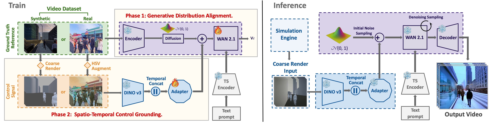

Traditional rendering pipelines rely on complex assets, accurate materials and lighting, and substantial computational resources to produce realistic imagery, yet they still face challenges in scalability and realism for populated dynamic scenes. We present C2R (Coarse-to-Real), a generative rendering framework that synthesizes real-style urban crowd videos from coarse 3D simulations. Our approach uses coarse 3D renderings to explicitly control scene layout, camera motion, and human trajectories, while a learned neural renderer generates realistic appearance, lighting, and fine-scale dynamics guided by text prompts.
To overcome the lack of paired training data between coarse simulations and real videos, we adopt a two-stage synthetic-real domain-hedging strategy that first learns a strong generative prior from large-scale real footage, then introduces controllability by using a small amount of paired synthetic coarse-fine data to anchor shared implicit spatio-temporal features across domains. The resulting system supports coarse-to-fine control, generalizes across diverse CG and game inputs, and produces temporally consistent, controllable, and realistic urban scene videos from minimal 3D input.

Our method generates photorealistic urban crowd videos from coarse 3D simulations across different scenes. For each of the scenes below, the top left video is the coarse driving input signal.
Our method is compatible with different coarsening levels of input signal. On the left column we show results for very coarse signal, where our model inpaints many details. On the right we show a mid-coarse geometry as input that already includes some fine details. Our model successfully follows the richer input signal, generating a video with the corresponding geometry.
Our model can turn a low-poly game video into real-style even though it has never been trained on any game videoss. It can add realism to the existing dynamics and appearance, add extra contents and solve collision issues in the original video.
We compare our results with a baseline trained with off-the-shelf ControlNet adaptor for Wan2.1. Our model yields more expressive videos, where both humans and scene exhibit more realistic appearance.
We also compare to off-the-shelf Wan2.1 using text-to-video directly.
WAN2.1 (left column) and SORA (right column): show limited controllability over human motion and camera trajectories, and tend to generate similar viewing angles across populated urban scenes.
Seedance 2.0: Under the same input conditions (coarse control video and text prompt), Seedance 2.0 exhibits limited ability to leverage the control signal, leading to weak alignment with the intended structure and semantics.